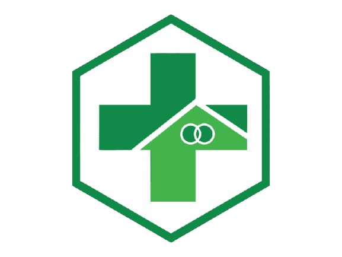

INDIKATOR PENLAIAN KINERJA PUSKESMAS PULE 2025
01
| Program/Kegiatan Klaster 2 | Jumlah Indikator | Link |
|---|---|---|
| Kesehatan Ibu dan Anak | 13 | Lihat Data |
| Kesehatan Apras - AUS | 6 | Lihat Data |
| Gizi | 12 | Lihat Data |
| Kesehatan Jiwa | 6 | Lihat Data |
| Kesehatan Tradisional | 5 | Lihat Data |
| Gigi dan Mulut | 4 | Lihat Data |
| P2P TBC | 5 | Lihat Data |
| P2P Hepatitis | 2 | Lihat Data |
| P2P Imunisasi | 7 | Lihat Data |
| P2P Diare | 3 | Lihat Data |
| P2P ISPA | 2 | Lihat Data |
| P2P Kusta | 2 | Lihat Data |
| P2P HIV/AIDS | 2 | Lihat Data |
| KTAR | 4 | Lihat Data |